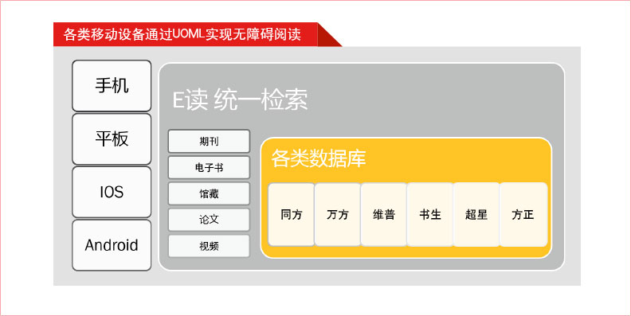
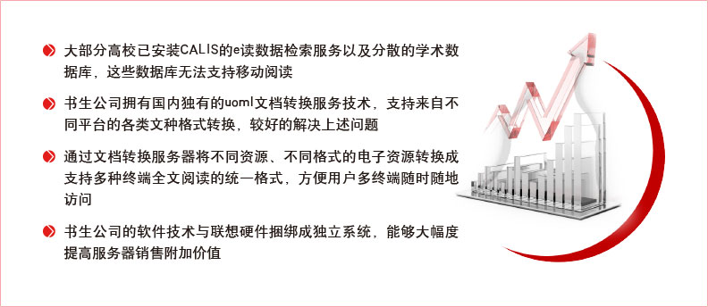
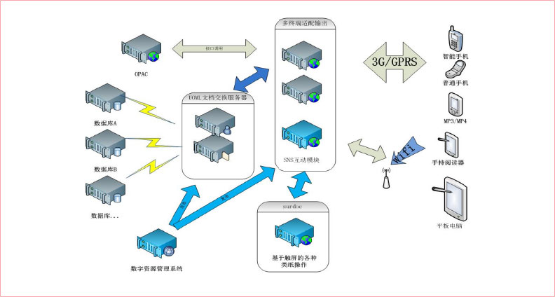
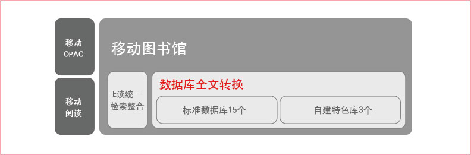
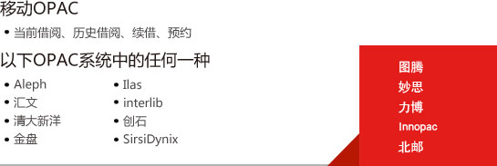
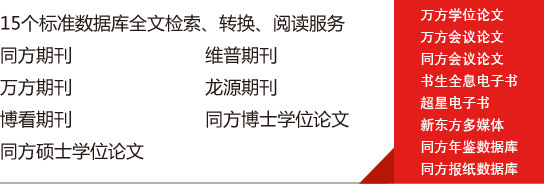

UOML文档转换服务器定位

产品定位和价值

系统架构图

功能列表
- 移动OPAC借阅历史、当前借阅、催还提醒、图书预约……
- 馆藏、期刊、图书、论文等文献检索
- 馆藏、期刊、图书、论文等全文阅读版式阅读、流式阅读
- 阅读辅助功能书签、收藏、笔记……
- 条码、二维码扫描
- 新闻、报纸浏览
- 学术微博
- 信息发布、浏览与订阅
- 个人中心
......
基本实施内容

管理功能列表
- 用户的添加、认证、删除、修改
- 发布公告信息
- 批量导入用户数据
- 管理用户建议、评论等
- 自定义消息栏目
- 相关访问统计数据
......
产品优势简介
实施内容-OPAC

实施内容-标准库

实施环境
Uoml 服务器预装软件环境要求如下
- 安装IIS6.0以上、server2003以上
- 提供一个固定的外网IP，并开放8085、8086、8087三个端口限定访问IP地址
- 提供远程桌面（尽量提供最佳）和向日葵远程控制软件，给予最高管理员权限，用于远程部署和维护
- UOML服务器有权限访问的馆内电子资源
- 保证带宽达到10M/s以上